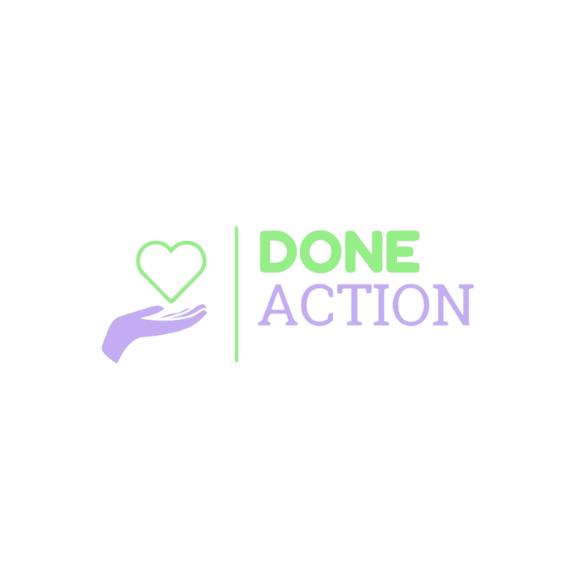

O jeito mais rapido é seguro de encontrar aquilo que precisa e ajudar aqueles que não possui nada.
comunidade
Conheça um pouco sobre a nossa comunidade
Missão
Em prol de uma comunidade melhor, conectamos pessoas que necessitem de algo, aqueles que possam e desejem doar, facilitando o processo de auxiliar o proximo e a reutilização de produtos que seriam descartados.
Visão
Ser referencial em praticidade de doação, sendo reconhecido em territorio nacional atraves do seus feitos e consolidado como sociedadde transparente e utilitária.
Valores
Responsabiliddade Social e Trabalho em Equipe.
Segmentos do aplicativo
O aplicativo encaixa-se na segmentação da intermediação, onde será adquirido por aqueles que desejem realizar uma doação e/ou por aqueles que necessitem de algo, portanto, doadores e receptores, conectando-os.
 saiba mais
saiba mais
Sobre nós
ENTENDA QUEM SOMOS
A DoneAction é uma empresa de ação humanitária que, por meio do aplicativo de mesmo nome, visa aplacar as dificuldades de falta de bens dos individuos através do processo de doação e da conexão entre pessoas que possuem carência de itens e pessoas que estejam dispostas a ajudá-las

DOCUMENTA√á√ÉO üßê
Entenda como o DoneAction foi feito.
Missão
Em prol de uma comunidade melhor, conectamos pessoas que necessitem de algo, aqueles que possam e desejem doar, facilitando o processo de auxiliar o proximo e a reutilização de produtos que seriam descartados.